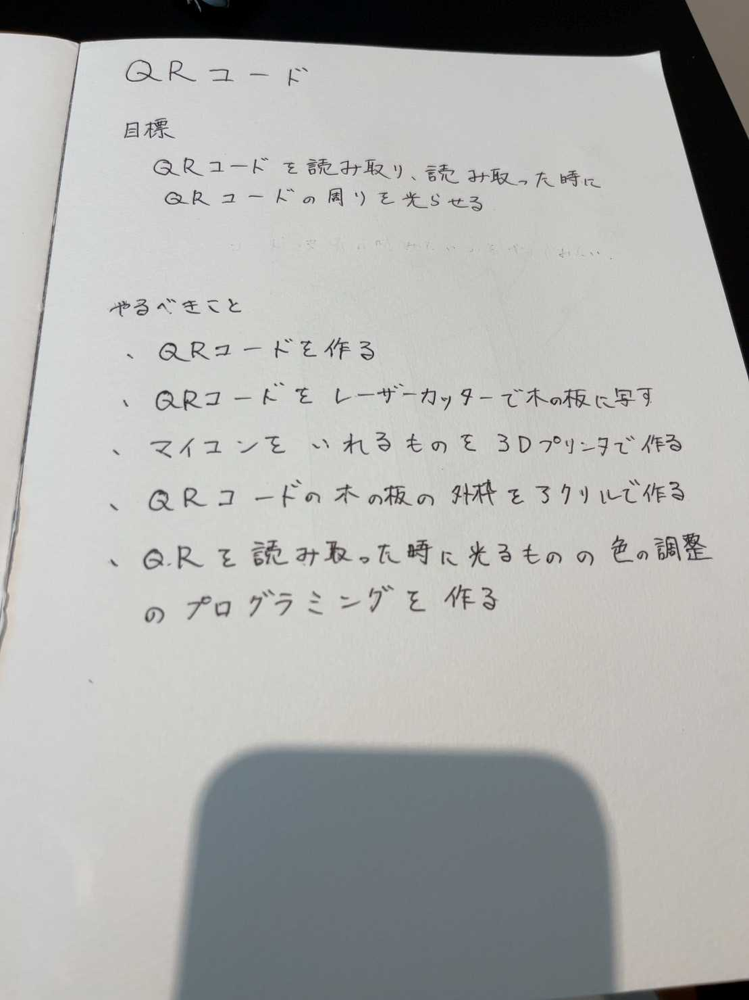
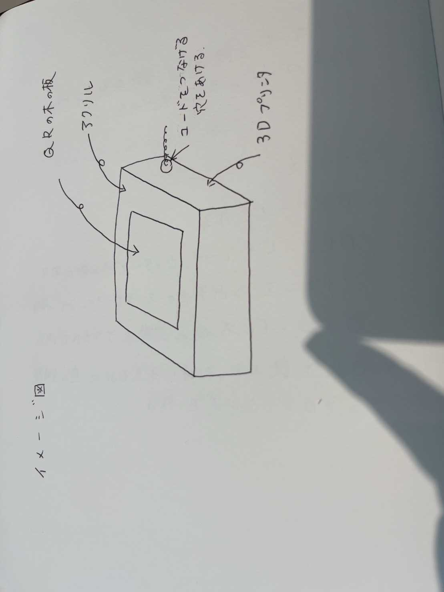
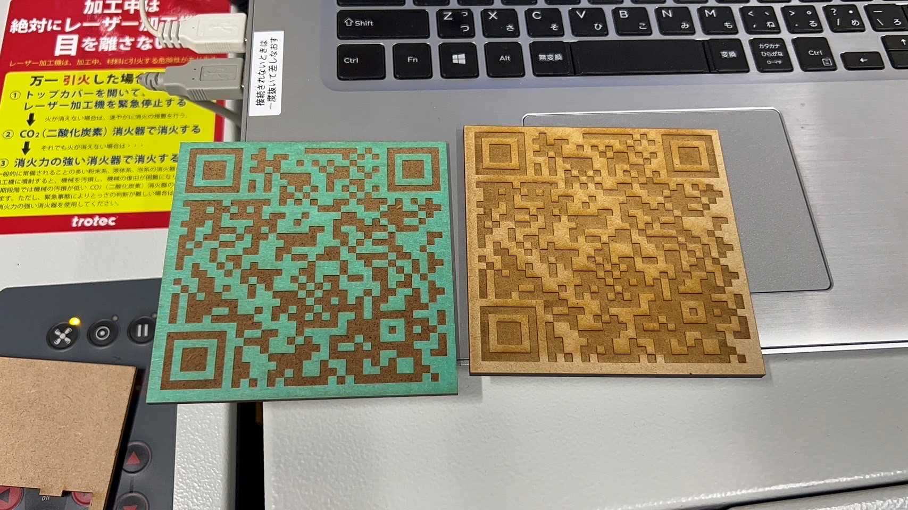
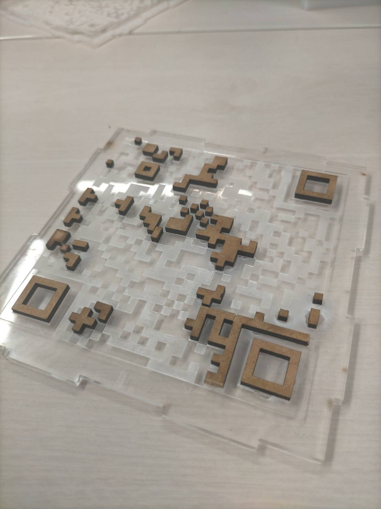
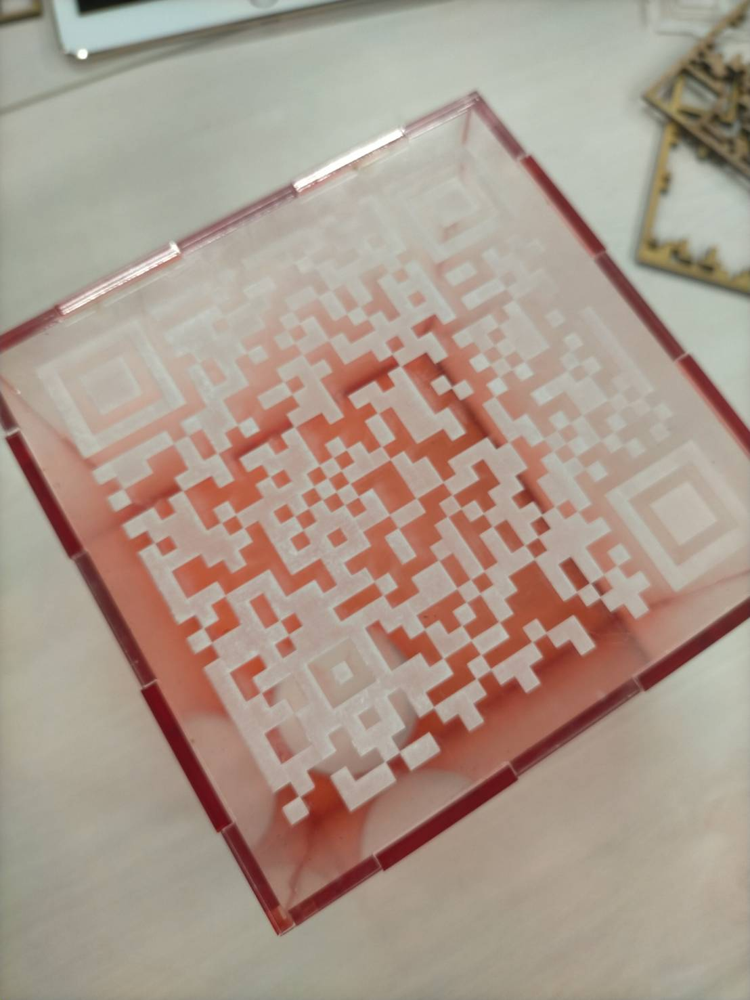
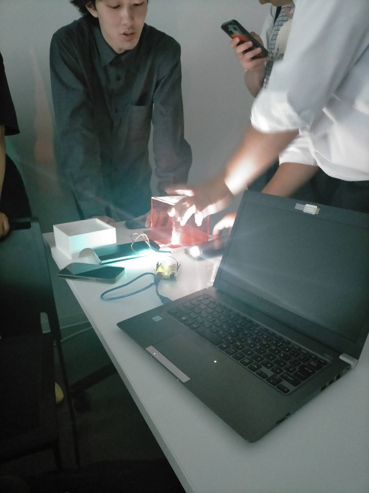
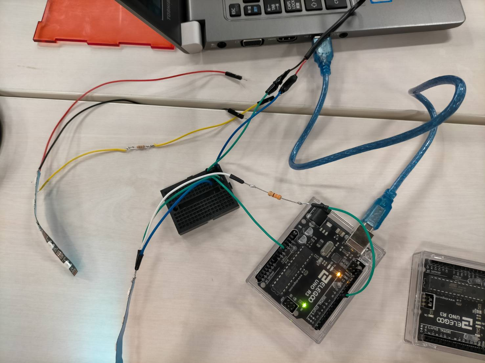

Project Note
1,アイディアスケッチ

2,決めた理由
班で案を出していた時は、このＱＲの意見以外にも掲示板に文字を遠隔で操作できるようにする音をセンサーで読み取りそれを数字化する
といったようなIotサービスのような意見が出ていました。
しかし、できないことが多くあることから、これまでの授業でやったことを全部使ってできるものを考え、この意見にいたりました。
3,完成予想図

4,概要
スマホでＱＲを読み取ると周りのアクリルのところから光るようにする。
イメージとしては、コード決済の時のスマホをかざすようなところみたいにしたい。
6,プロセスメモ
＜～6月18日までに進んだ内容＞
- QRコードを作成する
- QRコードを木の板に写す

＜6月19日に進めた内容＞
- アクリル板で入れ物を作る
- マイコンボードを隠すための土台を3Dプリンターで作る
- QRコードをアクリル板で作ってみる
→QRコードをアクリル板と木材を組み合わせて、光が綺麗に漏れるようにしてみる。

(途中経過)
＜～7月3日までに進めた内容＞
- アクリル板で作った入れ物を染める

- QRコードの読み込みを妨害しない光の当て方を探す

この結果、四方から均一に光を当てるのが１番綺麗にＱＲコードを読み込める事が判明しました。
- NeoPixelテープをArduinoに繋げるためのはんだ付けをする

＜7月10日に進めた内容＞
- NeoPixelテープをアクリル板で作った入れ物に貼る
- プログラムを調節する
- 動作確認をする
8,班のメンバー
奥谷、田中、新倉、関、小松、宮本